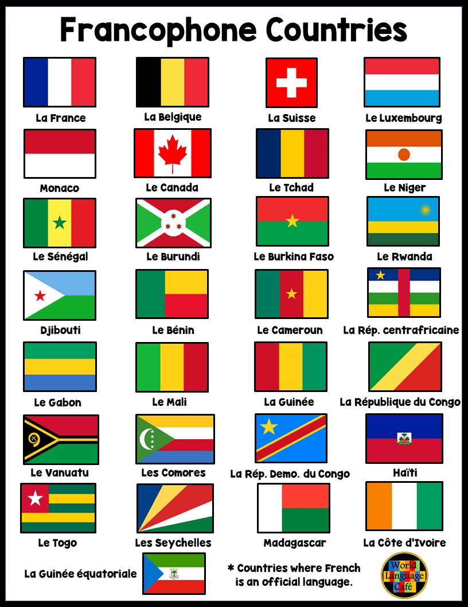

Walpole High School World Language
Walpole High School World Language
The Walpole High School World Language Department offers French, Spanish, and Latin at the CP2, CP1, Honors, and AP Levels. It offers Spanish I-V, French I-V, and Latin I-IV. The goal of the World Language Department is communicative proficiency in a second language. The Massachusetts Curriculum Frameworks states, “All Massachusetts students should acquire linguistic and cultural proficiency in at least one language in addition to English .” To accomplish this will require time, effort, and daily practice on the part of the student as well as a commitment to the longest sequence possible.
Walpole teachers and students share the vision of the Massachusetts Frameworks, which states that all students of all ages and at all levels of proficiency will use the target language to:
- communicate with users of the target language, especially those in their schools and communities;
- explore and celebrate the products, practices, and perspectives of other cultures;
- compare their own languages and cultures with those of the target communities;
- expand their academic knowledge of other disciplines;
- serve and lead in their academic, local, and global communities;
- become lifelong beneficiaries of the opportunities that proficiency in multiple languages can offer them
- become agents of change that promote equity, global awareness, and multicultural understanding.

French Classes
- French I CP1
- French II CP1 and French II Honors
- French III CP1 and French III Honors
- French IV Honors
- French IV CP1 / French V CP1
- French VH / French AP